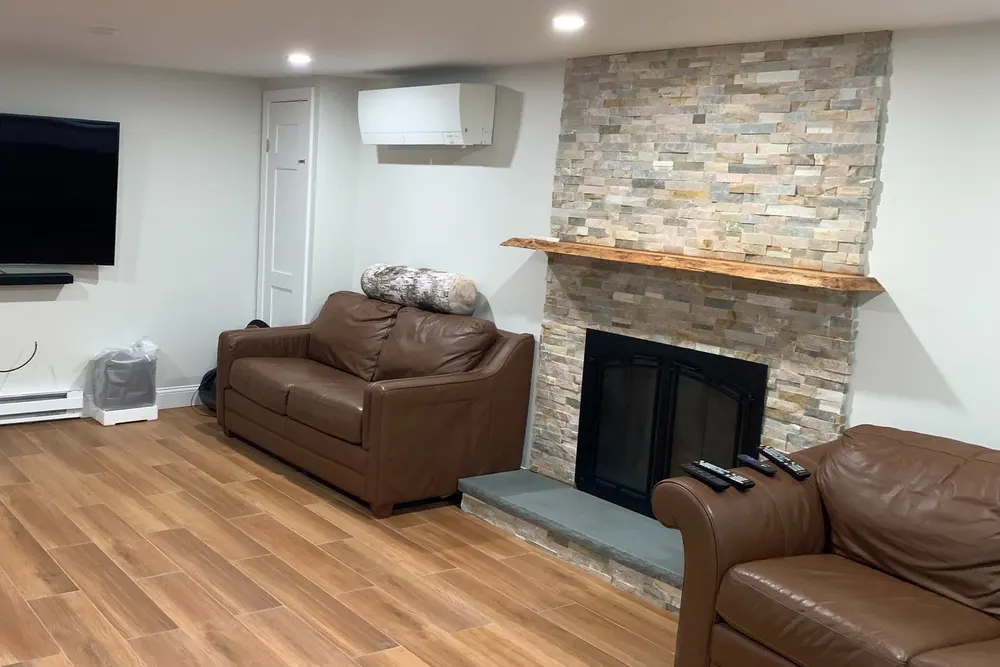

Basement finishing in Groveland, MA
Basement finishing Groveland MA homeowners can live in, from moisture check to move-in
Basement finishing in Groveland with DeFaria Construction turns an unfinished lower level into dry, warm, permitted living space, planned for Essex County homes and permitted through the Town of Groveland Building Department.
Our work
From open framing to a finished, insulated room
Watch a DeFaria conversion go from bare studs to an insulated, drywalled and painted room. A Groveland basement follows the same sequence, with moisture control first.
Get a Free Estimate
Local search focus
A Groveland basement starts with the walls you cannot see.

Across Groveland Center, South Groveland and Bradford Corner, Groveland mixes older mill-era and Colonial homes near the Merrimack River with later 20th-century suburban single-family houses. A finished basement in Groveland only lasts if moisture, insulation and air sealing are handled before the first stud goes up, so the room stays dry and warm through a New England winter.
This page is for Groveland homeowners comparing basement finishing contractors. It covers local homes, real 2026 costs, permits, egress and the full process, with a direct path to a free estimate.
- Clear estimate conversations before the project starts.
- Direct communication with the homeowner from walkthrough to final walkthrough.
- Local coverage across Groveland and the wider Essex County area.
The scope
What a full Groveland basement finishing project covers

In Groveland, older mill-era and Colonial homes near the Merrimack River alongside later suburban houses often shape how a project is planned.
- A dry, insulated envelope before any finish goes in.
- Wiring, heat and plumbing roughed in and inspected.
- Finished walls, floors, built-ins and lighting.
Groveland permits and inspections run through the Town of Groveland Building Department, and DeFaria keeps that step organized so scope and timeline stay realistic.
Cost
How much does basement finishing cost in Groveland?

Plan on roughly $35 to $90 per square foot for a Groveland basement, which puts a typical 700 to 900 square foot project around $30,000 to $75,000 before upgrades like a bathroom or a wet bar.
- The condition of the foundation and how dry it stays.
- Plumbing below the floor and whether an ejector pump is needed.
- Bedrooms that require egress windows and wells.
- Flooring, built-ins and finish level.
Because older mill-era and Colonial homes near the Merrimack River alongside later suburban houses often shape how a project is planned in Groveland, hidden conditions behind the walls are priced honestly at the walkthrough, not discovered mid-project.
DeFaria gives a fixed, itemized Groveland estimate at the walkthrough, so the price follows the real basement instead of a per-foot guess.
Process
How a Groveland basement project runs, step by step

A Groveland basement is built in a fixed order, and each phase is inspected before the next one starts.
- Walkthrough, measurements, moisture check and a fixed estimate.
- Design and permit application with the town.
- Moisture work, rim joist sealing and any egress cut.
- Framing, foam board insulation and fire blocking.
- Rough electrical, plumbing and heat, then inspections.
- Drywall, ceilings, flooring, trim and paint.
- Final inspection and walkthrough with you.
DeFaria coordinates the Groveland permit with the Town of Groveland Building Department before the rough-in, and keeps you updated at each step.
A typical Groveland basement runs about 6 to 10 weeks from permit to final walkthrough.
Materials
Materials that hold up below grade in Groveland

Because a Groveland basement is partly underground, the assembly is built for moisture first and looks second.
- Rigid foam board against the foundation, not fiberglass on concrete.
- Pressure-treated bottom plates and a capillary break.
- Mold-resistant drywall in damp-prone areas.
- Waterproof luxury vinyl plank flooring.
From Groveland Center to Bradford Corner, older mill-era and Colonial homes near the Merrimack River alongside later suburban houses often shape how a project is planned, which is exactly why the finish is specified for the home rather than a catalog.
When to remodel
Signs a Groveland basement is ready to finish

A few clear signs it is time to turn a Groveland basement into living space:
- Kids need a playroom away from the living room.
- Moisture is under control, or you are ready to fix it.
- Working from home needs a quiet, separate room.
- Relatives visit often and need a place to stay.
- A dated finished basement needs a full redo.
They are common across Groveland, from Groveland Center to Bradford Corner.
Moisture
Keeping a Groveland basement dry before it is finished

A finished basement in Groveland is only as good as the foundation behind it. Before framing we look at how water reaches the walls, how the floor drains and whether the space needs a sump, a backup pump or a properly sized dehumidifier.
In Essex County, spring thaw and heavy fall rains test every basement. If a Groveland basement leaks or stays damp, drainage comes first and finish work second.
Across Groveland neighborhoods like Groveland Center, South Groveland and Bradford Corner, we plan the basement finishing around how Essex County homes are actually built, and coordinate the local approvals with Town of Groveland Building Department.
The Groveland basement finishing is built for the neighborhood it sits in. Groveland mixes older mill-era and Colonial homes near the Merrimack River with later 20th-century suburban single-family houses.
In Groveland we cover Groveland Center, South Groveland and Bradford Corner, so the basement finishing fits the block it is on.
- Moisture readings on walls and slab.
- Drainage or waterproofing priced separately and openly.
- Radon test recommended before finishing.
- A capillary break between slab and framing.
Insulation
Insulating Groveland basement walls the right way
A warm basement depends on the layer behind the drywall. We use continuous foam on the foundation walls in Groveland, seal and insulate the rim joist, and fire-block the framing where the code requires it.
That assembly keeps condensation off the framing and makes the room feel like the rest of the house, not like a cellar with carpet.
In Groveland, homeowners near Groveland Center, South Groveland and Bradford Corner get a basement finishing scoped for the neighborhood and the Essex County housing it sits in, permitted through Town of Groveland Building Department.
We match the basement finishing to the local homes. Groveland mixes older mill-era and Colonial homes near the Merrimack River with later 20th-century suburban single-family houses.
Egress and code
Egress windows, ceilings and code for a Groveland basement
Any basement bedroom in Groveland needs an emergency escape opening: a window with at least 5.7 square feet of clear opening, at least 20 inches wide and 24 inches high, with the sill no more than 44 inches off the floor, plus a well you can climb out of.
Habitable basement rooms also need a finished ceiling height of about 7 feet, with some allowance for beams and ducts, plus smoke and carbon monoxide alarms where the code requires them.
For Groveland homes from Groveland Center to Bradford Corner, we tie the basement finishing to the realities of Essex County housing and keep Town of Groveland Building Department in the loop on approvals.
It helps to know the housing: Groveland mixes older mill-era and Colonial homes near the Merrimack River with later 20th-century suburban single-family houses. The Groveland basement finishing is scoped to fit it.
- Egress window and well for every basement bedroom.
- About 7 feet of finished ceiling height for living space.
- Smoke and carbon monoxide alarms.
- Building, electrical and plumbing permits and inspections.
Bathrooms
Adding a bathroom to a Groveland basement

Planning a bathroom early saves money in a Groveland basement, because the drain, vent and supply lines are laid out before the floor and walls are finished.
We coordinate the licensed plumbing, the permit and the inspections, and finish the bathroom with the same tile and trim quality as the rest of the house.
From Groveland Center to South Groveland and Bradford Corner, every Groveland basement finishing is matched to the local housing stock in Essex County, with Town of Groveland Building Department handling the permit side.
Local context shapes the work: Groveland mixes older mill-era and Colonial homes near the Merrimack River with later 20th-century suburban single-family houses. We plan the Groveland basement finishing around exactly that.
Ideas
Popular ways Groveland families use a finished basement

The best Groveland basements are planned around one or two clear uses, so the lighting, outlets and layout support them from day one.
Across Groveland neighborhoods like Groveland Center, South Groveland and Bradford Corner, we plan the basement finishing around how Essex County homes are actually built, and coordinate the local approvals with Town of Groveland Building Department.
Here is the local picture behind the basement finishing: Groveland mixes older mill-era and Colonial homes near the Merrimack River with later 20th-century suburban single-family houses.
- Media room with recessed lighting on dimmers.
- Wet bar for entertaining.
- Quiet office away from the household.
- In-law space with a full bathroom.
- Organized storage and laundry kept separate.
Timing
Why fall and winter suit a Groveland basement project
A Groveland basement is a natural winter project: the work happens below the living space, the house stays heated, and the dust is kept behind barriers while the family lives upstairs.
Planning now also gives time to decide on a bathroom, egress window or built-ins before the walls are framed.
From Groveland Center to South Groveland and Bradford Corner, every Groveland basement finishing is matched to the local housing stock in Essex County, with Town of Groveland Building Department handling the permit side.
We match the basement finishing to the local homes. Groveland mixes older mill-era and Colonial homes near the Merrimack River with later 20th-century suburban single-family houses.
Project photos
Finished basement photos for Groveland homeowners
Real DeFaria basements, so Groveland homeowners can see the finish level before requesting an estimate.
Areas covered
Basement finishing across Groveland neighborhoods
DeFaria Construction finishes basements across Groveland and nearby Essex County towns, with enough local context on this page to decide whether we are the right fit before you call.
From Groveland Center to Bradford Corner, Groveland homeowners get a basement finishing permitted through the Town of Groveland Building Department and matched to how local homes are built.
- Groveland Center
- South Groveland
- Bradford Corner
Reviews
What Groveland homeowners say about DeFaria Construction
DeFaria Construction has a 5.0 rating from 15 reviews on Google. See all reviews on Google.
I highly recommend Luiz as a contractor. When my spouse and I became first-time homebuyers, we hired him for a substantial remodel: painting walls throughout, refinished hardwood flooring and new tiles, new ceilings, and some carpentry. Luiz genuinely listened to our priorities when crafting the…
Wow! I couldn’t believe where I would be without Luiz. He completely transformed our kitchen and bathroom over the last year. My wife can’t get over the work he did. Would definitely recommend
Luiz and team did amazing work and were a pleasure to work with!
Internal links
Related DeFaria Construction pages
Compare the full basement finishing guide, the county service area and other Groveland services. Each link points to a live page with its own purpose.

Experience
Why this Groveland page is built for real homeowners, not just keywords.
DeFaria Construction is a local, owner-led remodeling company working across Essex County and Middlesex County. With Luiz DeFaria involved directly and an A+ BBB record behind the work, the Groveland basement page is written around real moisture control, insulation and finish work, not a town name dropped into a template.
DeFaria Construction is a licensed and insured local contractor with an A+ BBB rating and verified customer reviews, and every Groveland project is owner-led by Luiz DeFaria from the first walkthrough to the final one.
"the Groveland basement went from storage to the room we use every day."
Groveland homeowner

Read reviews left by Groveland-area clients: Read DeFaria Construction reviews on Google. BBB Accredited Business with an A+ rating since March 2024, verify on BBB.
The goal is to help someone searching for Groveland basement finishing understand the scope, the neighborhoods covered and how to start a direct conversation before requesting a free estimate.
Call (617) 893-2221 for a free estimateFAQ
Common questions about basement finishing in Groveland
How much does basement finishing cost in Groveland?
Most Groveland basements run about $35 to $90 per square foot, so a typical 700 to 900 square foot basement lands roughly between $30,000 and $75,000. Moisture work, a bathroom or an egress window add to that. DeFaria gives a fixed, itemized estimate at the walkthrough.
Do I need a permit to finish a basement in Groveland?
Yes. Turning a basement into living space needs a building permit, and electrical and plumbing work need their own permits by licensed trades. Groveland permits and inspections run through the Town of Groveland Building Department, and DeFaria keeps that step organized so scope and timeline stay realistic.
How long does it take to finish a basement in Groveland?
Most Groveland basements take about 6 to 10 weeks once the permit is issued, longer with a bathroom, an egress window or moisture repairs.
Do I need an egress window in my Groveland basement?
Any basement bedroom needs a code-size emergency escape window and well. A family room, office or gym without a sleeping room usually does not, but alarms, stairs and ceiling height still have to meet code.
Can you finish a Groveland basement that gets water?
Only after the water problem is fixed. We check grading, gutters, cracks, the sump and humidity first, and price any drainage or waterproofing separately and openly.
Is DeFaria Construction licensed and insured?
Yes. DeFaria Construction is a licensed and insured contractor with an A+ BBB rating and verified Google reviews, and every Groveland basement is owner-led by Luiz DeFaria.